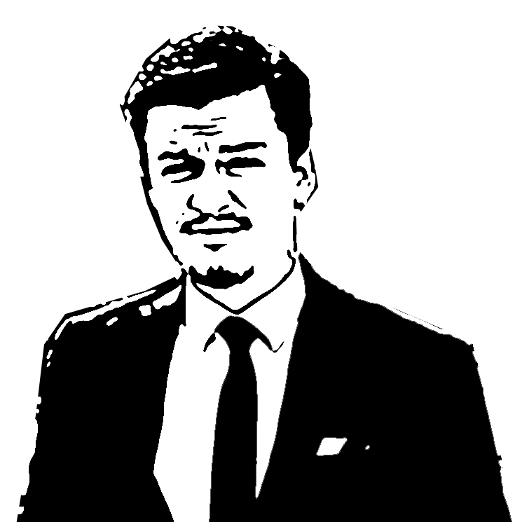

I am Senton Kaçaniku.
I am an entrepreneur and consultant with experience working with leading global corporations, NGO-s and local institutions on a broad range of issues. This is my personal page. To reach my company pages please go to Q-railing Kosova, ADLER HOLDING LLC, and to learn more about our Kosovo Fertilizer Project please visit Plehu.com.
What I do